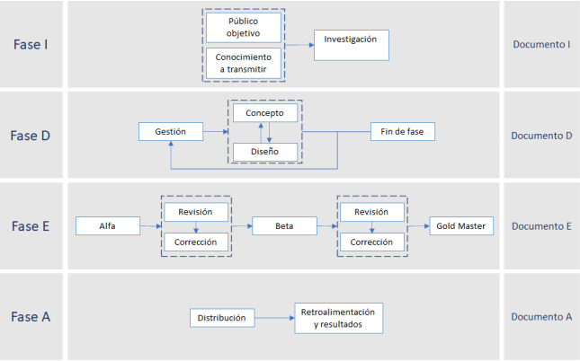

Basado en las pautas dadas por la PMI, los metodos de desarrollo de videojuegos y el Game Design Document, se elaboró una guia que permita conocer los pasos mas importantes a la hora de desarrollar un videojuego formativo. Proyecto de investigación para titulación en ESIME Culhuacán.
Herramientas utilizadas:
Evidencias:

Tesina
Plantilla con ejemplo(Descargable)